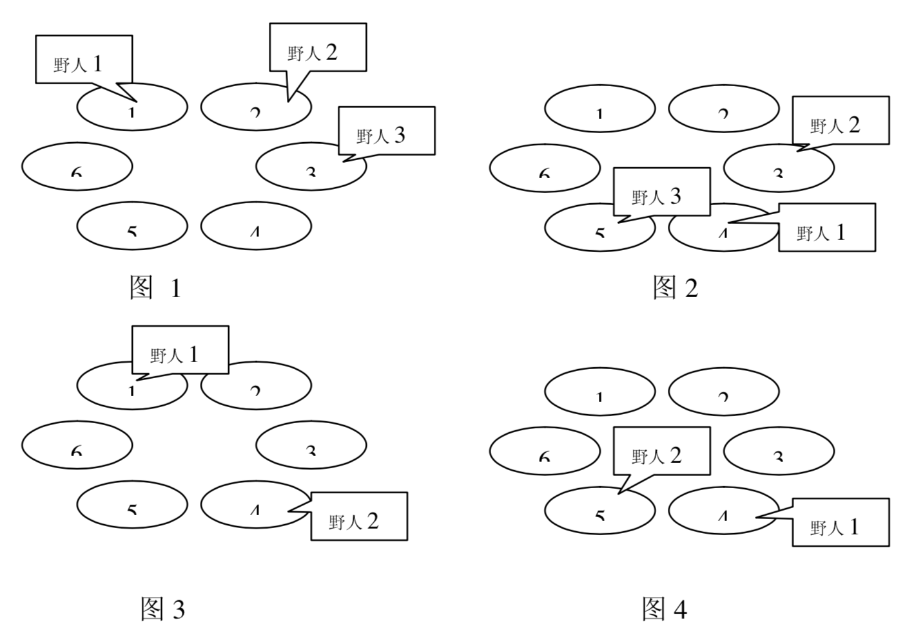

克里特岛以野人群居而著称。岛上有排列成环行的M个山洞。这些山洞顺时针编号为1,2,…,M。岛上住着N个野人，一开始依次住在山洞$C_1,C_2,…,C_N$中，以后每年，第$i$个野人会沿顺时针向前走$P_i$个洞住下来。每个野人$i$有一个寿命值$L_i$，即生存的年数。下面四幅图描述了一个有6个山洞，住有三个野人的岛上前四年的情况。三个野人初始的洞穴编号依次为1，2，3；每年要走过的洞穴数依次为3，7，2；寿命值依次为4，3，1。

奇怪的是，虽然野人有很多，但没有任何两个野人在有生之年处在同一个山洞中，使得小岛一直保持和平与宁静，这让科学家们很是惊奇。他们想知道，至少有多少个山洞，才能维持岛上的和平呢？
第1行为一个整数$N(1 \le N \le 15)$，即野人的数目。第2行到第N+1每行为三个整数$C_i, P_i, L_i (1 \le C_i,P_i \le 100, 0 \le L_i \le 10^6 )$，表示每个野人所住的初始洞穴编号，每年走过的洞穴数及寿命值。
仅包含一个数M，即最少可能的山洞数。输入数据保证有解，且M不大于$10^6$。
3 1 3 4 2 7 3 3 2 1
6
 Comet OJ
Comet OJ